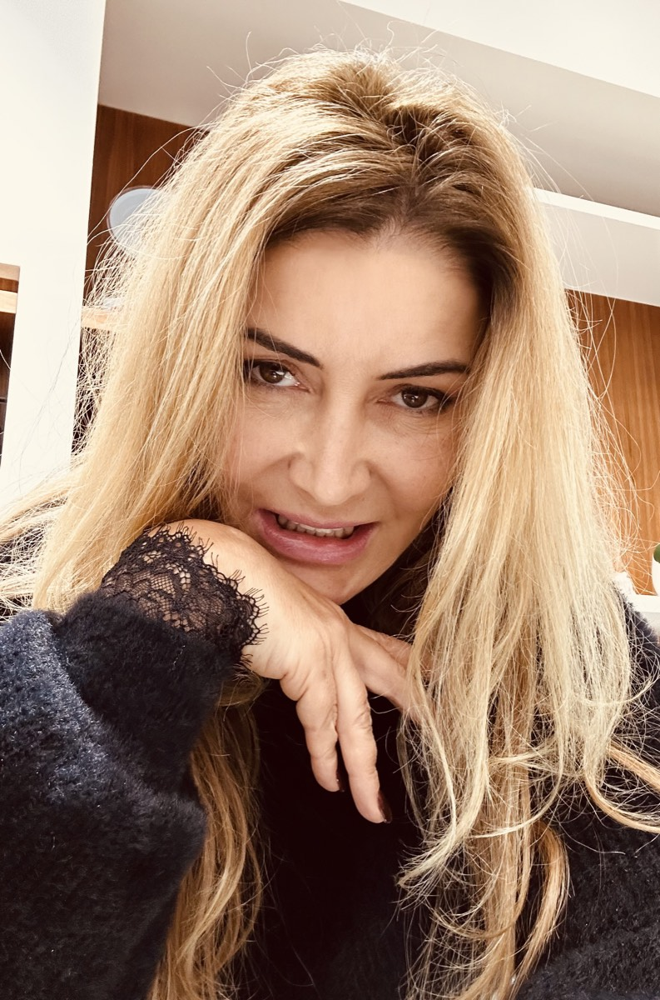
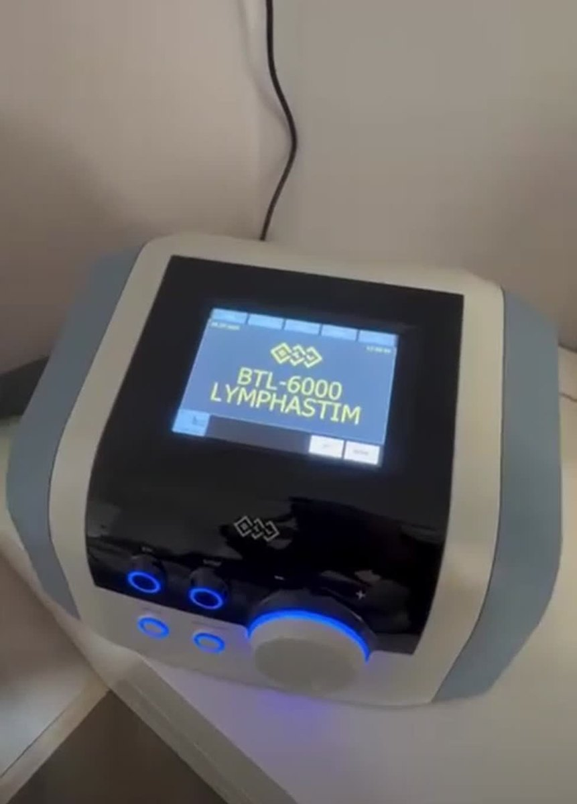
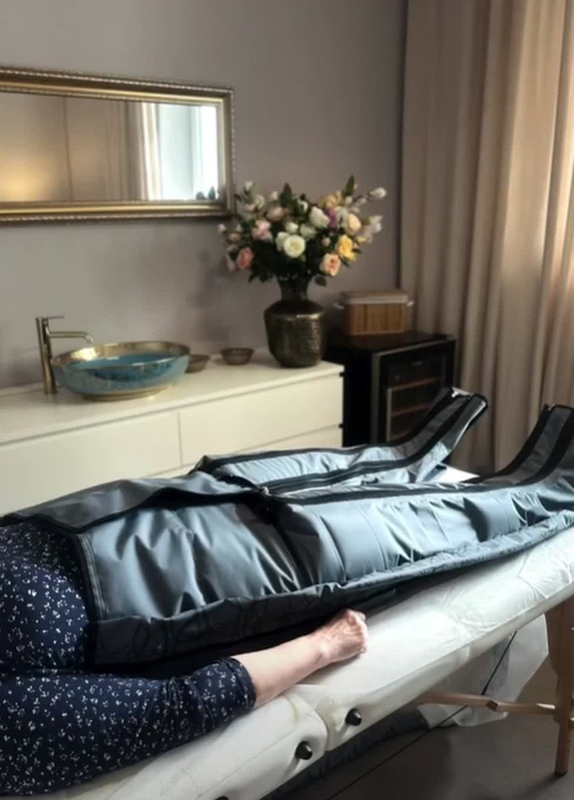
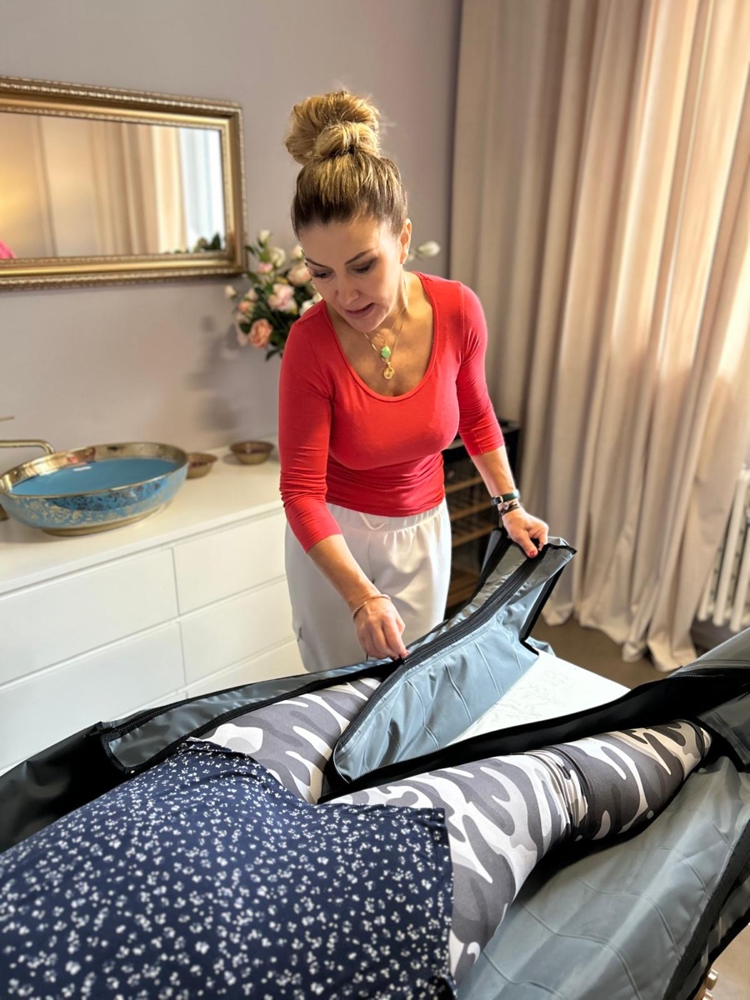
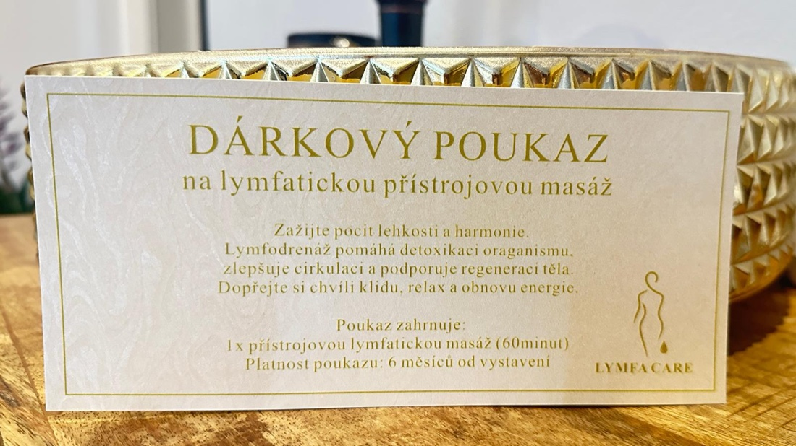
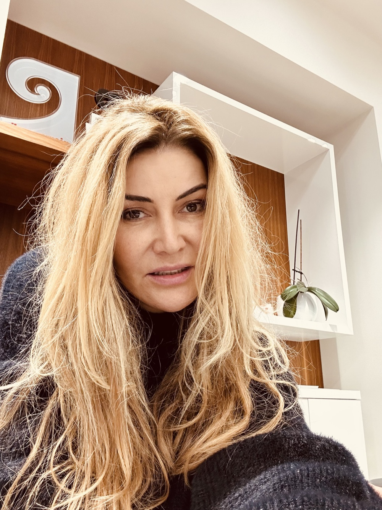
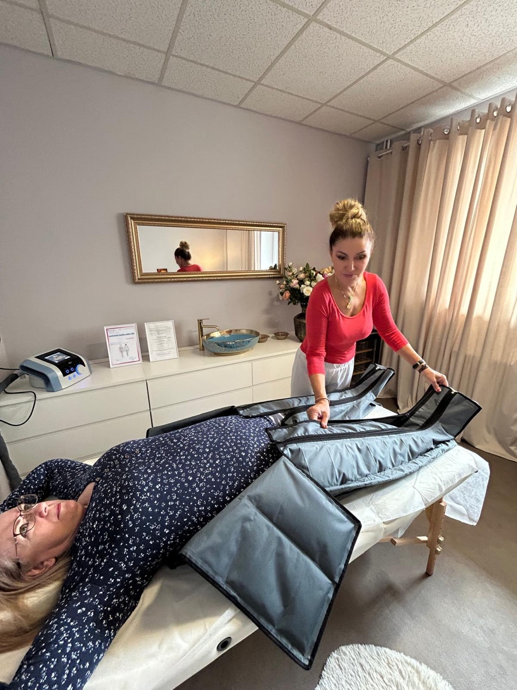
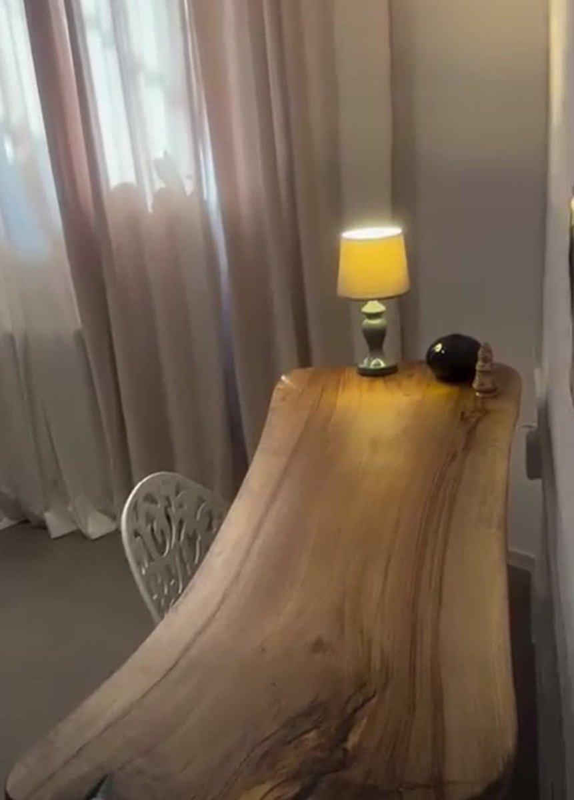
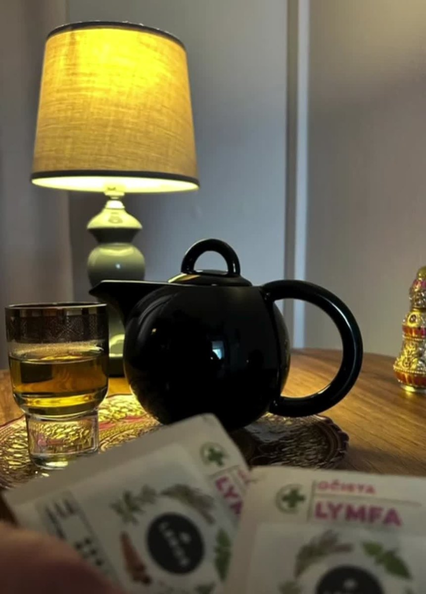

Přístrojová lymfodrenáž · Brno-Přízřenice
Lymfa se nepohybuje sama — nemá vlastní pumpu. Když se zastaví, tělo otéká, nohy jsou těžké a únava nemizí ani po spánku. Lymfodrenáž ji vrátí do pohybu. Vy jen ležíte, o zbytek se postará přístroj.
Lymfa proudí ke středu těla — od nohou vzhůru a od klíční kosti i paží dolů, vždy k břichu. Drenáž kopíruje tuto cestu.

Vítá vás
Ve svém studiu AXON-fit v Brně-Přízřenicích pomáhám lidem cítit se ve svém těle lehčeji — pomocí přístrojové lymfodrenáže. Nepracuji ve spěchu a nikdy nemám v místnosti dvě klientky najednou.
Zakládám si na individuálním přístupu, příjemné atmosféře a klidu. Věřím, že lidé si mnohem raději dopřejí péči od konkrétního člověka, kterého znají — proto jsem tu osobně u každého ošetření.
Co je lymfa
Vedle krevního oběhu má tělo ještě druhou síť — lymfatický systém. Odvádí z tkání přebytečnou tekutinu, odpadní látky z látkové výměny a podílí se na obranyschopnosti. Denně jím proteče kolem dvou litrů lymfy.
Zásadní rozdíl je v pohonu. Krev žene srdce — spolehlivě, bez přestání. Lymfa žádnou pumpu nemá. Pohybuje se jen díky stahům svalů, dýchání a tlaku okolních tkání. Když celý den sedíte, stojíte nebo jste po operaci upoutáni na lůžko, lymfa se doslova zastaví.
Tekutina pak zůstane tam, kde být nemá. Výsledek znáte: oteklé kotníky k večeru, těžké nohy, napjatá kůže, otoky pod očima a pocit, že je tělo „plné".
Lymfatická drenáž nedělá nic, co by tělo neumělo samo. Jen mu připomene, jak na to. Hana Marková
Jak to funguje
Pracuji s BTL-6000 Lymphastim Topline — nejvyšším modelem této řady, který se používá i v rehabilitaci a na lymfologických pracovištích.
Obléknete si návleky rozdělené na několik komor — podle potřeby na nohy, ruce nebo boky a břicho. Komory se pak postupně nafukují: vždy od nejvzdálenějšího místa směrem k tělu, tedy od chodidel vzhůru.
Tím vzniká pomalá tlaková vlna, která kopíruje přirozený směr lymfatického toku a posouvá zadrženou tekutinu k uzlinám, kde se odvede dál. Je to přesně ten pohyb, který lymfě chybí, když celý den sedíte nebo stojíte.
Tlak je měkký a nastavitelný — nemá bolet, má být příjemný. Většina klientek popisuje pocit jako opakované jemné objetí, a během procedury usne. Oproti ruční drenáži je přístroj naprosto pravidelný: udrží stejný rytmus i tlak po celou dobu.
Komory se plní postupně a vždy směrem k uzlinám — u nohou od chodidel vzhůru, u rukou od dlaní k tělu, vše k břichu. Přístroj tento přirozený směr respektuje.
Návlek je rozdělený na sekce. Právě jejich postupné plnění dělá z tlaku plynulou vlnu.
Tlak, délku i program volím podle toho, co řešíte a co je vám příjemné.



Průběh návštěvy
Skutečná posloupnost, kterou při každé návštěvě dodržuji — proto je očíslovaná.
Zeptám se na zdravotní stav, léky, operace a na to, co vás trápí. Některé stavy drenáž vylučují — proto se ptám dřív, než začneme.
Pohodlně si lehnete — zůstáváte oblečení. Nasadím vám návleky a nastavím tlak i program podle toho, co řešíte.
Komory se postupně nafukují od chodidel vzhůru a vytvářejí pomalou tlakovou vlnu. Vy jen ležíte v klidu — většina klientek usne.
Uvařím vám bylinkový čaj a necháme tělo v klidu doznít. Zbytek dne doporučuji hodně pít — drenáž pracuje ještě několik hodin.
Komu pomáhá
Nejčastější důvody, se kterými ke mně klientky přicházejí.
Sedavá práce, celodenní stání, dlouhé cesty nebo horké léto. Klasika, se kterou drenáž pomáhá nejrychleji.
Po náročném tréninku pomáhá odplavit produkty látkové výměny a zkrátit dobu, než se svaly zotaví. Skvěle se doplňuje i s EMS tréninkem, který u mě ve studiu absolvujete.
Hormonální výkyvy, nadýmání, pocit „plného" těla a napjaté kůže — typicky před menstruací nebo po slaném jídle.
Lepší odvod tekutiny se projeví na hladkosti pokožky i na postavě — otok ustoupí, nohy jsou lehčí a centimetry viditelně ubývají.
Drenáž se běžně používá v rehabilitaci. Vždy ale až se souhlasem vašeho lékaře — termín i rozsah řešíme podle něj.
Pomalý rytmus působí na nervový systém — tělo se přepne do odpočinku a vy odcházíte příjemně uvolnění a svěží.
Kdy drenáž vhodná není
Lymfodrenáž je velmi šetrná, přesto existují stavy, kdy se nedělá. Proto se na začátku ptám — a pokud si nebudeme jistí, pošlu vás nejdřív za lékařem.
Lymfodrenáž je wellness a regenerační procedura, ne léčba. Zdravotní potíže vždy patří nejdřív k lékaři.
Ceník
Jedna cena za hodinu procedury, bez ohledu na to, co spolu řešíme. Délku vždy domluvíme podle toho, co potřebujete.
Procedura
za hodinu procedury
Procedura
za hodinu procedury
Procedura
za hodinu procedury

Chcete někoho potěšit? Ráda vystavím dárkový poukaz na přístrojovou lymfatickou masáž — na jednu proceduru (60 minut) nebo na libovolný počet. Platnost 6 měsíců od vystavení. Stačí zavolat a domluvíme se.
Nevíte, která procedura je pro vás ta pravá? Zavolejte mi a poradíme se — domluvit termín můžeme rovnou.

O mně
Ve svém studiu AXON-fit v Brně-Přízřenicích se roky věnuji tomu, aby se lidé cítili ve svém těle lehčí. Vedle EMS tréninků, kterými jsem začínala, dnes nabízím i přístrojovou lymfodrenáž — přirozené doplnění, které tělu pomůže se rychleji zregenerovat.
Pracuji sama a jen s jednou klientkou v daný čas. Žádné spěchání, žádná čekárna plná lidí — jen klid, hudba a hodina, která patří výhradně vám.
Pokud si nebudu jistá, jestli je drenáž zrovna pro vás ta správná cesta, řeknu vám to upřímně — a klidně vás nasměruji nejdřív k lékaři. Záleží mi na tom, aby vám procedura opravdu pomohla, ne aby jen proběhla.
Těším se na vás, Hana
Studio
Klidná místnost jen pro vás — závěsy, tlumené světlo a čaj na závěr. Žádná čekárna, žádný spěch.



Objednání
Objednávám se telefonicky nebo přes SMS — ozvu se vám zpět a domluvíme termín, který vám sedne.